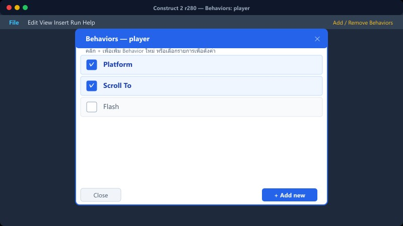
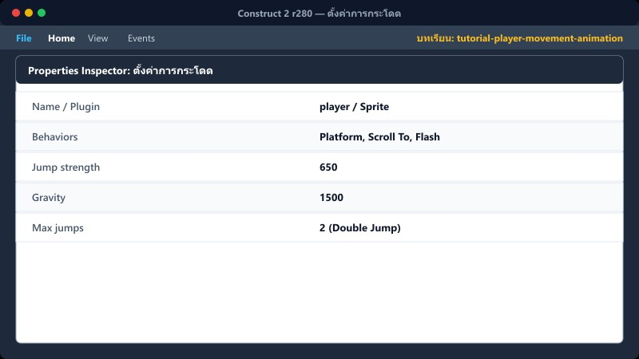
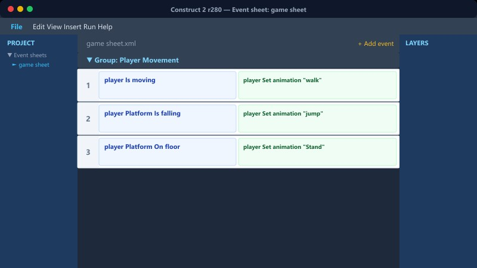
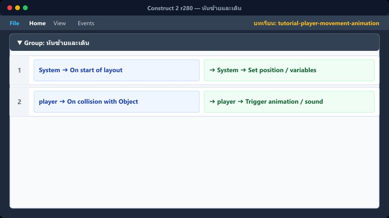
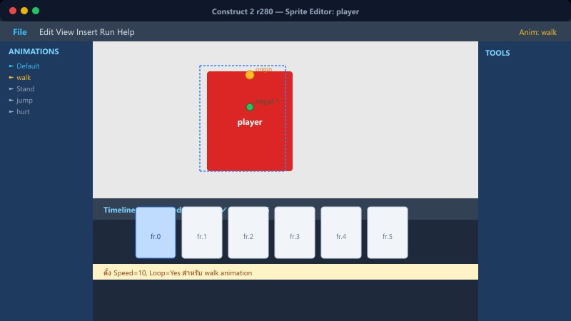
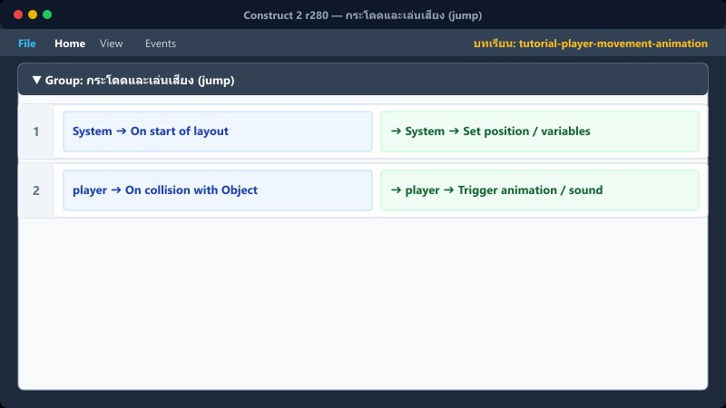
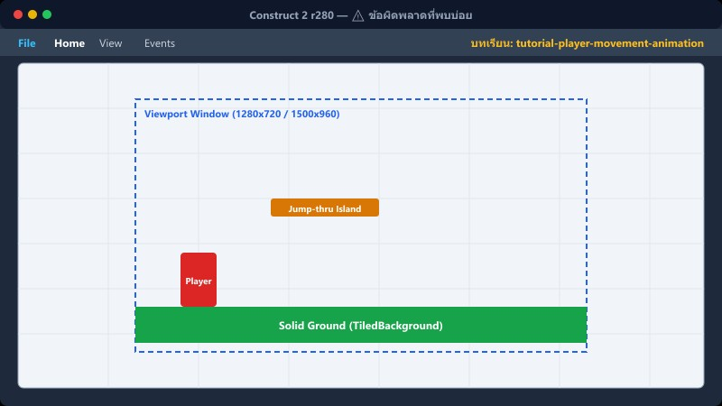

Platform→ปุ่มควบคุม→หันซ้าย–ขวา→เลือก Animation
1ใส่ Platform behavior

เลือก Sprite player → Properties → Behaviors → Add new behavior
คลิก + (Add new) > เลือก Platform > Add
Properties: Platform
| Default controls | Yes |
| Max speed | 330 |
| Acceleration | 1500 |
| Deceleration | 1500 |
ใช้ปุ่มลูกศรซ้าย–ขวาและปุ่ม Shift กระโดดได้ทันที
📍 ที่ไหนใน C2: Object player → Properties → Behaviors
2ตั้งค่าการกระโดด

ตั้งค่าใน Properties ของ Platform behavior
Properties: Platform (กระโดด)
| Jump strength | 650 |
| Gravity | 1500 |
| Max fall speed | 1000 |
| Max jumps | 2 |
Max jumps = 2 คือเพื่อให้กระโดดกลางอากาศ (Double Jump) ได้
📍 ที่ไหนใน C2: Object player → Properties
3หันขวาและเดิน

เมื่อกดปุ่มลูกศรขวา ให้กลับหน้าปกติและเล่นแอนิเมชันเดิน
▼ Group: เดิน+กระโดด
1
Keyboard Right arrow is down
➔ player Set mirrored: Not mirrored
➔ player Set animation "walk"
📍 ที่ไหนใน C2: game sheet → กลุ่ม "เดิน+กระโดด"
4หันซ้ายและเดิน

เมื่อกดปุ่มลูกศรซ้าย ให้กลับด้านภาพและเล่นแอนิเมชันเดิน
2
Keyboard Left arrow is down
➔ player Set mirrored: Mirrored
➔ player Set animation "walk"
📍 ที่ไหนใน C2: game sheet → กลุ่ม "เดิน+กระโดด"
5ยืนนิ่ง (Stand)

เมื่อไม่ได้เดินและอยู่บนพื้น ให้เล่นแอนิเมชันยืนนิ่ง
3
player Is moving
(คลิกขวา > Invert เพื่อให้เป็น Not moving)
player Is on floor
➔ player Set animation "Stand"
ชื่อ Animation ต้องพิมพ์ Stand ตัว S พิมพ์ใหญ่ให้ตรงเป๊ะ
📍 ที่ไหนใน C2: game sheet → กลุ่ม "เดิน+กระโดด"
6กระโดดและเล่นเสียง (jump)

4
player.Platform Is jumping
System Trigger once while true
➔ player Set animation "jump"
➔ Audio Play "jump"
ต้องใส่ Trigger once เสมอเวลาเล่นเสียง ไม่งั้นเสียงจะดังรัวๆ หลายร้อยครั้งต่อวินาที
📍 ที่ไหนใน C2: game sheet → กลุ่ม "เดิน+กระโดด"
⚠️ ข้อผิดพลาดที่พบบ่อย

- พิมพ์ชื่อ Animation ผิดพิมพ์ใหญ่เล็ก (เช่น พิมพ์ Stand ในโค้ด แต่ในภาพตั้งชื่อเป็น stand)
- ไม่ได้ตั้งค่า Loop: Yes ในภาพ walk ทำให้เวลาเดินภาพไม่ขยับต่อ
- ลืมใส่ Trigger once ในคำสั่ง Is jumping ทำให้เสียงกระโดดดังตื๊ดรัวๆ